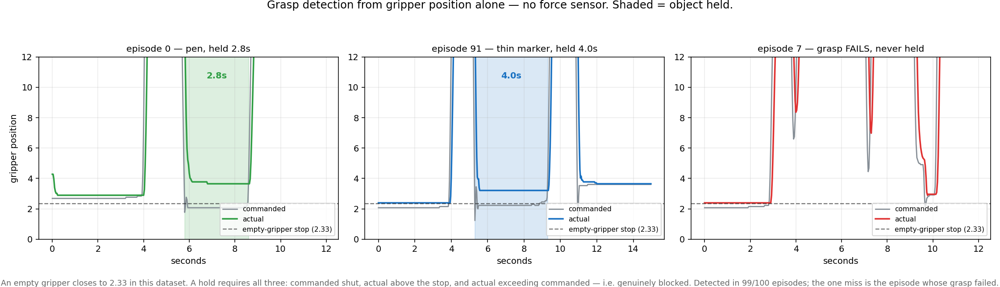
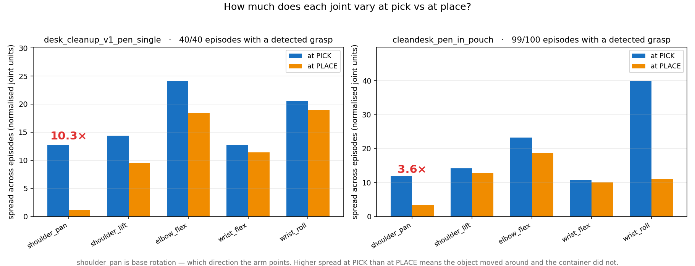

Desk cleanup: the pen task.
Pick a pen off the desk and drop it in the bin. Five policies, and the most useful result was finding that the one which looked like it had solved the task had not.
First attempt: more data, three policies, poor results
I collected two datasets, both teleoperated on the same table:
- 40 episodes with a single pen dropped into a bin, varying the pen's location.
- 60 episodes with several differently coloured pens on the table at varied positions, picking up one of them, and with the pouch shifted slightly between episodes.
I merged the two and trained three policies on the combined set: SmolVLA, a diffusion policy, and π0.5.
All three performed poorly. Four things change between the two sets at once: object count, colour, position and pouch location. Merged, that gives 100 episodes with no controlled axis, so more of the same mixture would not have helped. Holding everything still except one factor would.
π0.5 went unevaluated: at 3.3B parameters it does not fit the 8 GB box the robot runs on, with reported inference for π0 around 13.6 GB.
| Policy | Training data | Outcome | Note |
|---|---|---|---|
| SmolVLA | merged, 100 ep | Poor | Did not reliably complete the task |
| Diffusion policy | merged, 100 ep | Poor | Did not reliably complete the task |
| π0.5 | merged, 100 ep | Not evaluated | Does not fit the 8 GB box the robot runs on |
Simplify: one orange pen
So I cut it to the simplest version: a single orange pen, 40 episodes, into a pouch. It worked, which is the hardest case to learn anything from until you start breaking assumptions deliberately.
The factor sweep
Change one thing at a time from the trained condition. Both policies below saw the same 40 episodes: only the model differs between the columns.
| Factor | Condition | ACT | MolmoAct 2 |
|---|---|---|---|
| Baseline | Orange pen, trained orientation, trained pouch | Works | Works |
| Pen color | Purple | Works | Works |
| Green | Fails | Works | |
| Blue | Fails | Works | |
| Brown | Fails | Not tested | |
| Drop target | Different pouch | Fails | Not tested |
| Pouch removed entirely | FailsDrops at the learned location | Not tested | |
| Pen orientation | Significantly rotated | Fails | Not tested |
| Object count | Two pens, picked sequentially | Not tested | Works |
What the sweep says
Three things fall out of that table.
- Colour is doing the work. Orange and purple pass; green, blue and brown fail. Same shape, same task, same location, so it is keying on appearance rather than on the object.
- It memorized the drop location, not the target. Remove the pouch and the robot still goes to where it was and opens the gripper over empty table. It learned "go here", not "put it in the pouch".
- Orientation is brittle. Significant rotation of the pen causes failures, even in positions the policy otherwise handles.
The pouch row matters most: the policy is confidently wrong with no way to detect it. It holds no representation of the goal, only of the motion that usually satisfies it. The untested cells are the next runs.
Both failures have names
The colour result is shortcut learning, and published work on factor bias reports colour is the dominant factor policies over-rely on. The pouch result is causal confusion: across 40 demonstrations "open the gripper here" and "put it in the pouch" always coincided, so nothing separates them until the pouch moves.
MolmoAct: swapping in a VLM backbone
If a policy fails on green only because it has never seen green, a model that already knows what a pen is should not. MolmoAct 2, Ai2's action-reasoning model on the Molmo2-ER VLM backbone, trained on the same 40 episodes: no new demonstrations, only the model changed. It handled green, blue and the rest, so the limitation was in the representation, not the data.
Best run so far: two pens on the table, picked up one at a time and placed in the bin.
What the data said before any policy ran
Grasp success is detectable without a force sensor
Every frame records what the gripper was told to do and where it actually got to. Told to shut but unable to, something is in the way. That finds the grasp in 99 of 100 episodes, and the one miss is the episode whose grasp failed.

The memorization was in the data before training
Across every episode, shoulder_pan varies 12.7 units at pick and 1.2
at place: 10.3x tighter at the container than at the object. The
pen moved, the pouch did not. ACT's memorized drop location was measurable in the training
data before any policy ran. Units are LeRobot normalised, not degrees.

One caveat on that number: every episode in the first dataset is exactly 19.7 seconds, recorded on a fixed timer, so the arm parks at the end of each one. Some of the tightness is the task and some is the recording method.
Where it goes next
Variation back onto the single-pen task one axis at a time, orientation and location before colour, then multiple pens once the simple case is genuinely solid rather than apparently solid.
References
- Zhao et al., Learning Fine-Grained Bimanual Manipulation with Low-Cost Hardware, RSS 2023. The ACT policy: action chunking with a CVAE and transformer.
- Hugging Face LeRobot, SmolVLA. 450M-parameter vision-language-action model, SmolVLM-2 backbone plus a 100M action expert.
- Chi et al., Diffusion Policy: Visuomotor Policy Learning via Action Diffusion, RSS 2023.
- Physical Intelligence, π0.5. 3.3B parameters, which is what puts it out of reach on 8 GB of VRAM.
- Ai2, MolmoAct 2: An open foundation for robots that work in the real world. Action reasoning model on the Molmo2-ER embodied-reasoning VLM backbone.
- Geirhos et al., Shortcut Learning in Deep Neural Networks, Nature Machine Intelligence 2020. The general phenomenon behind the pen-color result.
- Shortcut Learning in Generalist Robot Policies: The Role of Dataset Diversity and Fragmentation, 2025. Reports color as the dominant factor policies over-rely on, and the budget-reallocation fix.
- de Haan, Jayaraman and Levine, Causal Confusion in Imitation Learning, NeurIPS 2019. Why a policy can learn a correlate of the goal and be unable to tell the difference.